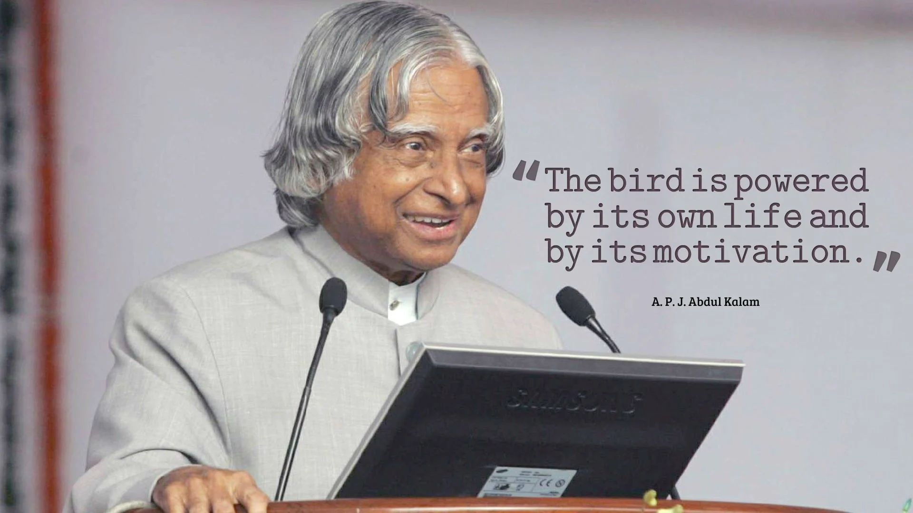

A.P.J ABDUL KALAM

- Avul Pakir Jainulabdeen Abdul Kalam BR (15 October 1931 – 27 July 2015) was an Indian aerospace scientist and statesman who served as the 11th president of India from 2002 to 2007.
- He was born and raised in Rameswaram, Tamil Nadu and studied physics and aerospace engineering
- He spent the next four decades as a scientist and science administrator, mainly at the Defence Research and Development Organisation (DRDO) and Indian Space Research Organisation (ISRO) and was intimately involved in India's civilian space programme and military missile development efforts.
- He thus came to be known as the Missile Man of India for his work on the development of ballistic missile and launch vehicle technology. He also played a pivotal organisational, technical, and political role in India's Pokhran-II nuclear tests in 1998, the first since the original nuclear test by India in 1974.
Early life and education
- Avul Pakir Jainulabdeen Abdul Kalam was born on 15 October 1931, to a Tamil Muslim family in the pilgrimage centre of Rameswaram on Pamban Island, then in the Madras Presidency and now in the State of Tamil Nadu.
- His father Jainulabdeen Marakayar was a boat owner and imam of a local mosque; his mother Ashiamma was a housewife. His father owned a ferry that took Hindu pilgrims back and forth between Rameswaram and the now uninhabited Dhanushkodi.Kalam was the youngest of four brothers and one sister in his family.
- His ancestors had been wealthy Marakayar traders and landowners, with numerous properties and large tracts of land. Marakayar are a Muslim ethnic group found in coastal Tamil Nadu and Sri Lanka who claim descent from Arab traders and local women. The family business had involved trading groceries between the mainland and the island and to and from Sri Lanka, as well as ferrying pilgrims between the mainland and Pamban.
- With the opening of the Pamban Bridge to the mainland in 1914, however, the businesses failed and the family fortune and properties were lost by the 1920s, apart from the ancestral home. The family was poverty-stricken by the time Kalam was born. As a young boy he had to sell newspapers to add to the family's meager income.
Career as a scientist
- After graduating from the Madras Institute of Technology in 1960, Kalam joined the Aeronautical Development Establishment of the Defence Research and Development Organisation (by Press Information Bureau, Government of India) as a scientist after becoming a member of the Defence Research & Development Service (DRDS). He started his career by designing a small hovercraft, but remained unconvinced by his choice of a job at DRDO.[26] Kalam joined the INCOSPAR, working under Vikram Sarabhai, the renowned space scientist.
- He was interviewed and recruited into ISRO by H. G. S. Murthy, the first Director of Thumba Equatorial Rocket Launching Station (TERLS). In 1969, Kalam was transferred to the Indian Space Research Organisation (ISRO) where he was the project director of India's first Satellite Launch Vehicle (SLV-III) which successfully deployed the Rohini satellite in near-earth orbit in July 1980; Kalam had first started work on an expandable rocket project independently at DRDO in 1965. In 1969, Kalam received the government's approval and expanded the programme to include more engineers.
Personal life
- Kalam was the youngest of five siblings, the eldest of whom was a sister, Asim Zohra (d. 1997), followed by three elder brothers: Mohammed Muthu Meera Lebbai Maraikayar (5 November 1916 – 7 March 2021), Mustafa Kalam (d. 1999) and Kasim Mohammed (d. 1995). He was extremely close to his elder siblings and their extended families throughout his life, and would regularly send small sums of money to his older relations, himself remaining a lifelong bachelor.
- Kalam was noted for his integrity and his simple lifestyle. He never owned a television, and was in the habit of rising at 6:30 or 7 a.m. and sleeping by 2 a.m. His few personal possessions included his books, his veena, some articles of clothing, a CD player and a laptop; at his death, he left no will, and his possessions went to his eldest brother, who survived him.